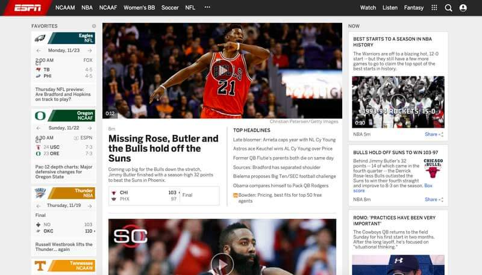

Why you should be excited about CSS shapes
By Chen Hui Jing / @hj_chen
Long ago, the web looked like this:


Then, came floats. And now most of our sites look like this:


Lots of variations of stacked rectangles...


Let's look at some magazine layouts...
But on the web, we were stuck with this:

Beyoncé is ready to receive you now. From the chair where she’s sitting, in the conference room of her sleek office suite in midtown Manhattan, at a round table elegantly laden with fine china, crisp cloth napkins, and take-out sushi from Nobu, she could toss some edamame over her shoulder and hit her sixteen Grammys, each wall-mounted in its own Plexiglas box.
She is luminous, with that perfect smile and smooth coffee skin that shines under a blondish topknot and bangs. Today she’s showing none of the bodaciously thick, hush-your-mouth body that’s on display onstage, in her videos, and on these pages.
This is Business Beyoncé, hypercomposed Beyoncé—fashionable, elegant, in charge. She’s wearing the handiwork of no fewer than seven designers, among them Givenchy (the golden pin at her neck), Day Birger et Mikkelsen (her dainty gray-pink petal-collar blouse), Christian Louboutin (her pink five-inch studded heels), and Isabel Marant (her floral pants).
Not any more :)
Beyoncé is ready to receive you now. From the chair where she’s sitting, in the conference room of her sleek office suite in midtown Manhattan, at a round table elegantly laden with fine china, crisp cloth napkins, and take-out sushi from Nobu, she could toss some edamame over her shoulder and hit her sixteen Grammys, each wall-mounted in its own Plexiglas box.
She is luminous, with that perfect smile and smooth coffee skin that shines under a blondish topknot and bangs. Today she’s showing none of the bodaciously thick, hush-your-mouth body that’s on display onstage, in her videos, and on these pages.
This is Business Beyoncé, hypercomposed Beyoncé—fashionable, elegant, in charge. She’s wearing the handiwork of no fewer than seven designers, among them Givenchy (the golden pin at her neck), Day Birger et Mikkelsen (her dainty gray-pink petal-collar blouse), Christian Louboutin (her pink five-inch studded heels), and Isabel Marant (her floral pants).She does not get up—a video camera has already been aimed at her face and turned on—so you greet her as you sit down.
Some background
🎮 🏀 🚲 💻 👟
My name is Chen Hui Jing.
Self taught designer and developer.
Work at Nurun Singapore.
Write blog posts from time to time.
CSS shapes (Level 1)
- shape-outside CSS property
- Defines the float area for inline content to wrap around the shape instead of the float's bounding box.
Let's talk about the box model
On box models and floats
Shape is clipped to margin-box
Can only ever reduce the float area
Wrapping only occurs on one side (for now)
4 basic shape functions
- The circle() function
- The ellipse() function
- The inset() function
- The polygon() function
The circle() function

.circle {
/* general styles for the div*/
width: 200px;
height: 200px;
background-color: #A4F4B0;
border-radius: 50%;
/* make it a shape!*/
shape-outside: circle();
float: left;
}Basic syntax
shape-outside: circle( [<shape-radius>]? [at <position>]? )shape-radius takes any CSS length.
position refers to the x, y coordinates, which default to the centre of the element, (0, 0).
The ellipse() function

.ellipse {
width: 100px;
height: 200px;
background-color: #A4F4B0;
border-radius: 50%;
shape-outside: ellipse();
float: left;
}Basic syntax
shape-outside: ellipse( [<shape-radius>{2}]? [at <position>]? )shape-radius takes in 2 variables, length of radius along the x-axis and along the y-axis.
position refers to the x, y coordinates, which default to the centre of the element, (0, 0).
The inset() function

.inset {
width: 200px;
height: 160px;
background-color: #A4F4B0;
border-radius: 50px;
shape-outside: inset(0px round 50px);
float: left;
}Basic syntax
shape-outside: inset( <shape-arg>{1,4} [round <border-radius>]? )shape-arg syntax is similar to margin or padding: top, right, bottom, left.
Inset is applied from the edge of the element inwards toward the centre.
border-radius is optional.
The polygon() function

.polygon {
width: 200px;
height: 200px;
clip-path: polygon(0 0, 0 200px, 200px 100px);
background-color: #A4F4B0;
shape-outside: polygon(0 0, 0 200px, 200px 100px);
float:left;
}Basic syntax
shape-outside: polygon( [<fill-rule>,]? [<shape-arg> <shape-arg>]# )fill-rule is optional, default value is nonzero.
Create your polygon using clip-path.
For complex shapes, try using the CSS Shapes Editor for Chrome extension.
Use an image with alpha properties
.shape {
shape-outside: url("path/to/nicely-cropped-image.png");
shape-image-threshold: 0.5;
shape-margin: 10px;
float: left;
}shape-image-threshold defines the float area, and ranges from 0.0 (transparent) to 1.0 (opaque).
Can I use...CSS shapes?

Polyfill
The go-to polyfill for CSS Shapes is the CSS Shapes Polyfill by the Adobe Web Platform team.
To find out more...
Understanding Reference Boxes for CSS Shapes and Getting Started with CSS Shapes by Razvan Caliman
Creating Non-Rectangular Layouts With CSS Shapes and CSS Shapes 101 by Sara Soueidan
More good stuff on the way...
The shape-inside property let's us put content inside a defined shape
Defines arbitrary areas around which inline content can flow